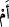

Câhilden daha fakir kimse olmazdı.
Hâlbuki câhillere öyle rızıklar erişiyor ki
Âlimler bu duruma şaşırıp kalıyorlar.”
Abdurrahman b. Tâhir’den rivâyet edildiğine göre Harun Reşid Mısır’a bir vâli
tâyin etti. Vâli Mısır’a gitmek üzere yola koyuldu. Nihâyet şehri uzaktan görünce
“Firavun’un kibirlenip böbürlenerek «Mısır mülkü benim değil mi» dediği ülke bu mu?
Vallahi bu Mısır hiç de girmeye değmez” dedi ve atının yularını salıverdi.
52. «Yoksa ben, kendisi zayıf ve neredeyse söz anlatamayacak durumda bulunan
şu adamdan daha hayırlı değil miyim?»
“Yoksa ben,” bu saltanat ve zenginlikle “kendisi zayıf,” hakîr ve fakîr, dilindeki
pepelikten dolayı “nerdeyse söz anlatamayacak durumda bulunan şu adamdan daha
hayırlı değil miyim?”
Âyetin başındaki “ /em” edatı munkatıa olup “
/bel ene hayrun” yani “bilakis
ben ondan daha hayırlıyım” demektir. “Hemze” takrîr yani onları bu durumu kabullenip
ikrâr etmeye yönlendirmek içindir. Sanki Firavun, fazîlet sebeplerini ve üstünlük
gerekçelerini sayıp döktükten sonra şöyle demiş oluyor: “Sizin nezdinizde ıspat edilip
yerleşti ki ben Mûsâ’dan daha iyi, daha hayırlıyım. Onun durumu şöyledir..” Ebu’l-
Leys’e göre burada mânâ “ben ondan daha iyiyim” demek olup “ /em” zâiddir.
Muhakkık ulemâ ise burada “ /em” kelimesinin istifham/soru mânâsı dikkate
alınmaksızın bir sözden diğer söze intikal için olduğunu söylemişlerdir. Nitekim
“yoksa ne yaptınız?” (en-Neml, 27/84) âyetindeki kullanım da böyledir.
Müftü Sa’dî demiştir ki: Bu âyette “ihtibâk” sanatı icrâ edilmiş de olabilir. Önce
“ibsâr” görme zikredilmiş ikinci durumda bunun bir benzerinin hazfedildiğine delâleti
sağlanmıştır. İkinci olarak “hayırlı oluş” zikredilmiş başta bunun bir benzerinin
hazfedildiğine delâleti sağlanmıştır. Mânâ şöyledir: “O benden hayırlı mı ki size
anlattığım şeyleri görmüyorsunuz? Yoksa ben mi ondan hayırlıyım ki siz zâten bunu
görüyorsunuz.”
“
/mehîn” kelimesi “
/mehânet” kökünden gelip azlık ve fakirlik demektir.
“Nerdeyse söz anlatamayacak durumda bulunan”, dilindeki pepelikten dolayı
nerdeyse sözü izah edemeyecek olan biri nasıl peygamberlik için elverişli olabilir ki.
Firavun bu sözüyle şunu demek istiyor: “Mûsâ’nın saltanat ve siyâsete dâir kendisini
destekleyip takviye edecek delilleri ve alametleri yoktur.” Nitekim Kureyş de “Bu